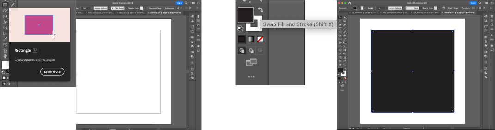

How To Make:
Simple Sticky Note in Adobe Illustrator

1. Select the rectangle tool and on your artboard drag from the left while holding shift to create a perfect square.
2. Then deselect the square and click the swap stroke/fill button to fill the square.